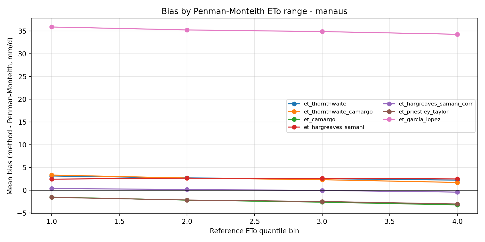

Site report
ET₀ — Manaus
Amazonia · Af · AM · Brazil
Site metadata
Data quality
Coverage and QC flags by input variable.
| site | variable | row_count | expected_days | start_date | end_date | missing_dates | duplicate_dates | missing_values | interpolated_values | physical_limit_violations |
|---|---|---|---|---|---|---|---|---|---|---|
| manaus | tmed_c | 366 | 366 | 2024-01-01 | 2024-12-31 | — | — | 0 | 0 | 0 |
| manaus | rh_mean_pct | 366 | 366 | 2024-01-01 | 2024-12-31 | — | — | 0 | 0 | 0 |
| manaus | wind_mean_ms | 366 | 366 | 2024-01-01 | 2024-12-31 | — | — | 0 | 0 | 0 |
| manaus | tmax_c | 366 | 366 | 2024-01-01 | 2024-12-31 | — | — | 0 | 0 | 0 |
| manaus | rh_max_pct | 366 | 366 | 2024-01-01 | 2024-12-31 | — | — | 0 | 0 | 0 |
| manaus | wind_max_ms | 366 | 366 | 2024-01-01 | 2024-12-31 | — | — | 0 | 0 | 0 |
| manaus | tmin_c | 366 | 366 | 2024-01-01 | 2024-12-31 | — | — | 0 | 0 | 0 |
| manaus | rh_min_pct | 366 | 366 | 2024-01-01 | 2024-12-31 | — | — | 0 | 0 | 0 |
| manaus | rain_mm | 366 | 366 | 2024-01-01 | 2024-12-31 | — | — | 1 | 1 | 0 |
| manaus | rad_global_mj_m2_d | 366 | 366 | 2024-01-01 | 2024-12-31 | — | — | 0 | 0 | 0 |
| manaus | rad_net_mj_m2_d | 366 | 366 | 2024-01-01 | 2024-12-31 | — | — | 0 | 0 | 0 |
| manaus | et_thornthwaite | 366 | 366 | 2024-01-01 | 2024-12-31 | — | — | 0 | 0 | 0 |
| manaus | et_thornthwaite_camargo | 366 | 366 | 2024-01-01 | 2024-12-31 | — | — | 0 | 0 | 0 |
| manaus | et_camargo | 366 | 366 | 2024-01-01 | 2024-12-31 | — | — | 0 | 0 | 0 |
| manaus | et_hargreaves_samani | 366 | 366 | 2024-01-01 | 2024-12-31 | — | — | 0 | 0 | 0 |
| manaus | et_hargreaves_samani_corr | 366 | 366 | 2024-01-01 | 2024-12-31 | — | — | 0 | 0 | 0 |
| manaus | et_priestley_taylor | 366 | 366 | 2024-01-01 | 2024-12-31 | — | — | 0 | 0 | 0 |
| manaus | et_penman_monteith | 366 | 366 | 2024-01-01 | 2024-12-31 | — | — | 0 | 0 | 0 |
| manaus | et_garcia_lopez | 366 | 366 | 2024-01-01 | 2024-12-31 | — | — | 0 | 0 | 366 |
| manaus | T_med | 366 | 366 | 2024-01-01 | 2024-12-31 | — | — | 353 | 353 | 0 |
| manaus | I | 366 | 366 | 2024-01-01 | 2024-12-31 | — | — | 354 | 354 | 0 |
| manaus | I_Anual | 366 | 366 | 2024-01-01 | 2024-12-31 | — | — | 365 | 365 | 0 |
| manaus | a | 366 | 366 | 2024-01-01 | 2024-12-31 | — | — | 365 | 365 | 0 |
| manaus | et | 366 | 366 | 2024-01-01 | 2024-12-31 | — | — | 353 | 353 | 0 |
| manaus | T | 366 | 366 | 2024-01-01 | 2024-12-31 | — | — | 0 | 0 | 0 |
| manaus | UR | 366 | 366 | 2024-01-01 | 2024-12-31 | — | — | 0 | 0 | 0 |
| manaus | es_max | 366 | 366 | 2024-01-01 | 2024-12-31 | — | — | 0 | 0 | 0 |
| manaus | es_min | 366 | 366 | 2024-01-01 | 2024-12-31 | — | — | 0 | 0 | 0 |
| manaus | es | 366 | 366 | 2024-01-01 | 2024-12-31 | — | — | 0 | 0 | 0 |
| manaus | s | 366 | 366 | 2024-01-01 | 2024-12-31 | — | — | 0 | 0 | 0 |
Method feasibility
| method_name | status | required_columns | missing_columns | valid_day_fraction | reason |
|---|---|---|---|---|---|
| Thornthwaite | precomputed_only | spreadsheet column | — | 1.0000 | attached from input |
| Thornthwaite-Camargo | precomputed_only | spreadsheet column | — | 1.0000 | attached from input |
| Camargo | computable | tmed_c, ra_extraterrestre_mj_m2_d | — | 1.0000 | computed successfully in dry-run |
| Hargreaves-Samani | computable | tmin_c, tmax_c, tmed_c, ra_extraterrestre_mj_m2_d | — | 1.0000 | computed successfully in dry-run |
| Hargreaves-Samani corrected | precomputed_only | spreadsheet column | — | 1.0000 | attached from input |
| Priestley-Taylor | computable | tmed_c, rad_net_mj_m2_d | — | 1.0000 | computed successfully in dry-run |
| Penman-Monteith FAO-56 | computable | tmed_c, rad_net_mj_m2_d, wind_mean_ms | — | 1.0000 | computed successfully in dry-run |
| Garcia-Lopez | computable | tmed_c, rad_global_mj_m2_d, rh_mean_pct, wind_mean_ms | — | 1.0000 | computed successfully in dry-run |
| Makkink | computable | tmed_c, rad_global_mj_m2_d | — | 1.0000 | computed successfully in dry-run |
| McCloud | computable | tmed_c | — | 1.0000 | computed successfully in dry-run |
| Turc | computable | tmed_c, rad_global_mj_m2_d | — | 1.0000 | computed successfully in dry-run |
| Global Radiation | computable | rad_global_mj_m2_d | — | 1.0000 | computed successfully in dry-run |
| Ivanov | computable | tmed_c, rh_mean_pct | — | 1.0000 | computed successfully in dry-run |
| Jensen-Heise | computable | tmed_c, rad_global_mj_m2_d | — | 1.0000 | computed successfully in dry-run |
| Net Radiation | computable | rad_net_mj_m2_d | — | 1.0000 | computed successfully in dry-run |
| Radiation-Temperature | computable | tmed_c, rad_global_mj_m2_d | — | 1.0000 | computed successfully in dry-run |
| Lungeon | computable | tmed_c, rh_mean_pct | — | 1.0000 | computed successfully in dry-run |
| Stephens-Stewart | computable | tmed_c, rad_global_mj_m2_d | — | 1.0000 | computed successfully in dry-run |
| Hicks-Hess | computable | tmed_c, rad_global_mj_m2_d, wind_mean_ms | — | 1.0000 | computed successfully in dry-run |
Method rankings
Composite rank within this site (monthly, then daily).
Manaus — monthly
Best overall: Lungeon (composite rank)
| rank | method | rmse | mae | mbe | r | r2 | willmott_d | c | classification |
|---|---|---|---|---|---|---|---|---|---|
| 1 | Lungeon | 20.5217 | 19.2526 | -19.2526 | 0.9779 | 0.9563 | 0.5795 | 0.5667 | Poor |
| 2 | Hargreaves Samani | 26.0025 | 24.3521 | 24.3521 | 0.9031 | 0.8155 | 0.5198 | 0.4694 | Bad |
| 3 | Camargo | 24.1782 | 21.8935 | 21.2765 | 0.8796 | 0.7737 | 0.4976 | 0.4376 | Bad |
| 4 | Garcia Lopez | 38.3370 | 36.1689 | -36.1689 | 0.9537 | 0.9095 | 0.3669 | 0.3500 | Very Poor |
| 5 | Turc | 25.8510 | 22.1849 | -22.1849 | 0.7553 | 0.5705 | 0.4385 | 0.3312 | Very Poor |
| 6 | Hicks Hess | 36.6677 | 34.2514 | -34.2514 | 0.7531 | 0.5671 | 0.3742 | 0.2818 | Very Poor |
| 7 | Jensen Heise | 36.6042 | 34.1506 | -34.1506 | 0.7424 | 0.5512 | 0.3737 | 0.2775 | Very Poor |
| 8 | Stephens Stewart | 37.6545 | 35.2000 | -35.2000 | 0.7199 | 0.5182 | 0.3660 | 0.2635 | Very Poor |
| 9 | Radiation Temperature | 38.0957 | 35.6390 | -35.6390 | 0.7012 | 0.4917 | 0.3629 | 0.2545 | Very Poor |
| 10 | Priestley Taylor | 38.0575 | 35.5843 | -35.5843 | 0.6635 | 0.4402 | 0.3628 | 0.2407 | Very Poor |
| 11 | Global Radiation | 37.5385 | 35.0352 | -35.0352 | 0.6221 | 0.3870 | 0.3659 | 0.2276 | Very Poor |
| 12 | Makkink | 41.3374 | 39.0802 | -39.0802 | 0.6544 | 0.4282 | 0.3464 | 0.2267 | Very Poor |
| 13 | Net Radiation | 38.0119 | 35.5222 | -35.5222 | 0.6221 | 0.3870 | 0.3628 | 0.2257 | Very Poor |
| 14 | Mccloud | 3273.8507 | 3264.0347 | 3264.0347 | 0.9419 | 0.8872 | 0.0078 | 0.0073 | Very Poor |
| 15 | Ivanov | 4468.4163 | 4205.1577 | 4205.1577 | 0.9776 | 0.9558 | 0.0074 | 0.0072 | Very Poor |
Manaus — daily
Best overall: Lungeon (composite rank)
| rank | method | rmse | mae | mbe | r | r2 | willmott_d | c | classification |
|---|---|---|---|---|---|---|---|---|---|
| 1 | Lungeon | 0.7705 | 0.6325 | -0.6312 | 0.9165 | 0.8401 | 0.6334 | 0.5805 | Poor |
| 2 | Camargo | 0.9182 | 0.8270 | 0.6976 | 0.8776 | 0.7701 | 0.5303 | 0.4653 | Bad |
| 3 | Garcia Lopez | 1.3500 | 1.1859 | -1.1859 | 0.9514 | 0.9052 | 0.4268 | 0.4061 | Bad |
| 4 | Hicks Hess | 1.2977 | 1.1230 | -1.1230 | 0.8356 | 0.6982 | 0.4349 | 0.3634 | Very Poor |
| 5 | Hargreaves Samani | 0.9739 | 0.8925 | 0.7984 | 0.6516 | 0.4246 | 0.5506 | 0.3588 | Very Poor |
| 6 | Turc | 0.9887 | 0.7530 | -0.7274 | 0.7720 | 0.5960 | 0.4637 | 0.3580 | Very Poor |
| 7 | Jensen Heise | 1.3015 | 1.1197 | -1.1197 | 0.7546 | 0.5695 | 0.4308 | 0.3251 | Very Poor |
| 8 | Stephens Stewart | 1.3370 | 1.1541 | -1.1541 | 0.7385 | 0.5454 | 0.4221 | 0.3117 | Very Poor |
| 9 | Radiation Temperature | 1.3519 | 1.1685 | -1.1685 | 0.7254 | 0.5261 | 0.4184 | 0.3035 | Very Poor |
| 10 | Priestley Taylor | 1.3511 | 1.1667 | -1.1667 | 0.6993 | 0.4890 | 0.4181 | 0.2924 | Very Poor |
| 11 | Makkink | 1.4506 | 1.2813 | -1.2813 | 0.6993 | 0.4890 | 0.4061 | 0.2840 | Very Poor |
| 12 | Global Radiation | 1.3344 | 1.1487 | -1.1487 | 0.6718 | 0.4513 | 0.4213 | 0.2830 | Very Poor |
| 13 | Net Radiation | 1.3500 | 1.1647 | -1.1647 | 0.6718 | 0.4513 | 0.4179 | 0.2807 | Very Poor |
| 14 | Mccloud | 107.7087 | 107.0175 | 107.0175 | 0.8815 | 0.7770 | 0.0116 | 0.0102 | Very Poor |
| 15 | Ivanov | 152.6745 | 137.8740 | 137.8740 | 0.9164 | 0.8397 | 0.0109 | 0.0100 | Very Poor |
Monthly metrics
Error and agreement metrics versus Penman–Monteith.
| method | rmse | mae | mbe | r | r2 | willmott_d | c | classification |
|---|---|---|---|---|---|---|---|---|
| Lungeon | 20.5217 | 19.2526 | -19.2526 | 0.9779 | 0.9563 | 0.5795 | 0.5667 | Poor |
| Hargreaves Samani | 26.0025 | 24.3521 | 24.3521 | 0.9031 | 0.8155 | 0.5198 | 0.4694 | Bad |
| Camargo | 24.1782 | 21.8935 | 21.2765 | 0.8796 | 0.7737 | 0.4976 | 0.4376 | Bad |
| Garcia Lopez | 38.3370 | 36.1689 | -36.1689 | 0.9537 | 0.9095 | 0.3669 | 0.3500 | Very Poor |
| Turc | 25.8510 | 22.1849 | -22.1849 | 0.7553 | 0.5705 | 0.4385 | 0.3312 | Very Poor |
| Hicks Hess | 36.6677 | 34.2514 | -34.2514 | 0.7531 | 0.5671 | 0.3742 | 0.2818 | Very Poor |
| Jensen Heise | 36.6042 | 34.1506 | -34.1506 | 0.7424 | 0.5512 | 0.3737 | 0.2775 | Very Poor |
| Stephens Stewart | 37.6545 | 35.2000 | -35.2000 | 0.7199 | 0.5182 | 0.3660 | 0.2635 | Very Poor |
| Radiation Temperature | 38.0957 | 35.6390 | -35.6390 | 0.7012 | 0.4917 | 0.3629 | 0.2545 | Very Poor |
| Priestley Taylor | 38.0575 | 35.5843 | -35.5843 | 0.6635 | 0.4402 | 0.3628 | 0.2407 | Very Poor |
| Global Radiation | 37.5385 | 35.0352 | -35.0352 | 0.6221 | 0.3870 | 0.3659 | 0.2276 | Very Poor |
| Makkink | 41.3374 | 39.0802 | -39.0802 | 0.6544 | 0.4282 | 0.3464 | 0.2267 | Very Poor |
| Net Radiation | 38.0119 | 35.5222 | -35.5222 | 0.6221 | 0.3870 | 0.3628 | 0.2257 | Very Poor |
| Mccloud | 3273.8507 | 3264.0347 | 3264.0347 | 0.9419 | 0.8872 | 0.0078 | 0.0073 | Very Poor |
| Ivanov | 4468.4163 | 4205.1577 | 4205.1577 | 0.9776 | 0.9558 | 0.0074 | 0.0072 | Very Poor |
Daily metrics
Error and agreement metrics versus Penman–Monteith.
| method | rmse | mae | mbe | r | r2 | willmott_d | c | classification |
|---|---|---|---|---|---|---|---|---|
| Lungeon | 0.7705 | 0.6325 | -0.6312 | 0.9165 | 0.8401 | 0.6334 | 0.5805 | Poor |
| Camargo | 0.9182 | 0.8270 | 0.6976 | 0.8776 | 0.7701 | 0.5303 | 0.4653 | Bad |
| Garcia Lopez | 1.3500 | 1.1859 | -1.1859 | 0.9514 | 0.9052 | 0.4268 | 0.4061 | Bad |
| Hicks Hess | 1.2977 | 1.1230 | -1.1230 | 0.8356 | 0.6982 | 0.4349 | 0.3634 | Very Poor |
| Hargreaves Samani | 0.9739 | 0.8925 | 0.7984 | 0.6516 | 0.4246 | 0.5506 | 0.3588 | Very Poor |
| Turc | 0.9887 | 0.7530 | -0.7274 | 0.7720 | 0.5960 | 0.4637 | 0.3580 | Very Poor |
| Jensen Heise | 1.3015 | 1.1197 | -1.1197 | 0.7546 | 0.5695 | 0.4308 | 0.3251 | Very Poor |
| Stephens Stewart | 1.3370 | 1.1541 | -1.1541 | 0.7385 | 0.5454 | 0.4221 | 0.3117 | Very Poor |
| Radiation Temperature | 1.3519 | 1.1685 | -1.1685 | 0.7254 | 0.5261 | 0.4184 | 0.3035 | Very Poor |
| Priestley Taylor | 1.3511 | 1.1667 | -1.1667 | 0.6993 | 0.4890 | 0.4181 | 0.2924 | Very Poor |
| Makkink | 1.4506 | 1.2813 | -1.2813 | 0.6993 | 0.4890 | 0.4061 | 0.2840 | Very Poor |
| Global Radiation | 1.3344 | 1.1487 | -1.1487 | 0.6718 | 0.4513 | 0.4213 | 0.2830 | Very Poor |
| Net Radiation | 1.3500 | 1.1647 | -1.1647 | 0.6718 | 0.4513 | 0.4179 | 0.2807 | Very Poor |
| Mccloud | 107.7087 | 107.0175 | 107.0175 | 0.8815 | 0.7770 | 0.0116 | 0.0102 | Very Poor |
| Ivanov | 152.6745 | 137.8740 | 137.8740 | 0.9164 | 0.8397 | 0.0109 | 0.0100 | Very Poor |
Uncertainty and sensitivity
Bootstrap intervals and sensitivity notes.
# Uncertainty and sensitivity analysis: manaus Bootstrap intervals use paired daily resampling against Penman-Monteith and are descriptive, not a substitute for measurement-error propagation. Wet/dry grouping is data-driven from the median monthly rainfall within the analyzed year. ## Bootstrap intervals | method | metric | estimate | ci_lower | ci_upper | n | n_boot | confidence | | --- | --- | --- | --- | --- | --- | --- | --- | | et_thornthwaite | rmse | 2.6762 | 2.6300 | 2.7229 | 366 | 1000 | 0.9500 | | et_thornthwaite | mae | 2.6345 | 2.5879 | 2.6819 | 366 | 1000 | 0.9500 | | et_thornthwaite | mbe | 2.6345 | 2.5879 | 2.6819 | 366 | 1000 | 0.9500 | | et_thornthwaite_camargo | rmse | 2.5779 | 2.5125 | 2.6430 | 366 | 1000 | 0.9500 | | et_thornthwaite_camargo | mae | 2.4958 | 2.4309 | 2.5579 | 366 | 1000 | 0.9500 | | et_thornthwaite_camargo | mbe | 2.4958 | 2.4309 | 2.5579 | 366 | 1000 | 0.9500 | | et_camargo | rmse | 2.5997 | 2.5333 | 2.6664 | 366 | 1000 | 0.9500 | | et_camargo | mae | 2.5135 | 2.4463 | 2.5850 | 366 | 1000 | 0.9500 | | et_camargo | mbe | -2.4027 | -2.5066 | -2.2971 | 366 | 1000 | 0.9500 | | et_hargreaves_samani | rmse | 2.5547 | 2.5199 | 2.5908 | 366 | 1000 | 0.9500 | | et_hargreaves_samani | mae | 2.5304 | 2.4957 | 2.5682 | 366 | 1000 | 0.9500 | | et_hargreaves_samani | mbe | 2.5304 | 2.4957 | 2.5682 | 366 | 1000 | 0.9500 | | et_hargreaves_samani_corr | rmse | 0.3588 | 0.3309 | 0.3865 | 366 | 1000 | 0.9500 | | et_hargreaves_samani_corr | mae | 0.2885 | 0.2677 | 0.3093 | 366 | 1000 | 0.9500 | | et_hargreaves_samani_corr | mbe | 0.0000 | -0.0376 | 0.0371 | 366 | 1000 | 0.9500 | | et_priestley_taylor | rmse | 2.3966 | 2.3388 | 2.4601 | 366 | 1000 | 0.9500 | | et_priestley_taylor | mae | 2.3241 | 2.2651 | 2.3873 | 366 | 1000 | 0.9500 | | et_priestley_taylor | mbe | -2.3241 | -2.3873 | -2.2651 | 366 | 1000 | 0.9500 | | et_garcia_lopez | rmse | 35.0926 | 35.0215 | 35.1580 | 366 | 1000 | 0.9500 | | et_garcia_lopez | mae | 35.0868 | 35.0150 | 35.1519 | 366 | 1000 | 0.9500 | Showing first 20 of 21 rows. See CSV outputs for complete tables. ## Monthly and rainfall-season errors | period_type | period | method | n | rain_mm | rmse | mae | mbe | | --- | --- | --- | --- | --- | --- | --- | --- | | month | 2024-01 | et_thornthwaite | 31 | 137.0000 | 2.5969 | 2.5451 | 2.5451 | | month | 2024-01 | et_thornthwaite_camargo | 31 | 137.0000 | 2.5969 | 2.5451 | 2.5451 | | month | 2024-01 | et_camargo | 31 | 137.0000 | 2.3286 | 2.2272 | -0.9183 | | month | 2024-01 | et_hargreaves_samani | 31 | 137.0000 | 2.3579 | 2.3389 | 2.3389 | | month | 2024-01 | et_hargreaves_samani_corr | 31 | 137.0000 | 0.2979 | 0.2633 | -0.0712 | | month | 2024-01 | et_priestley_taylor | 31 | 137.0000 | 2.3008 | 2.2547 | -2.2547 | | month | 2024-01 | et_garcia_lopez | 31 | 137.0000 | 35.1368 | 35.1331 | 35.1331 | | month | 2024-02 | et_thornthwaite | 29 | 324.4000 | 2.5390 | 2.4544 | 2.4544 | | month | 2024-02 | et_thornthwaite_camargo | 29 | 324.4000 | 2.4640 | 2.3767 | 2.3767 | | month | 2024-02 | et_camargo | 29 | 324.4000 | 2.7329 | 2.6545 | -2.6545 | | month | 2024-02 | et_hargreaves_samani | 29 | 324.4000 | 2.3376 | 2.3190 | 2.3190 | | month | 2024-02 | et_hargreaves_samani_corr | 29 | 324.4000 | 0.3948 | 0.3447 | -0.1653 | | month | 2024-02 | et_priestley_taylor | 29 | 324.4000 | 2.4685 | 2.4024 | -2.4024 | | month | 2024-02 | et_garcia_lopez | 29 | 324.4000 | 34.9715 | 34.9656 | 34.9656 | | month | 2024-03 | et_thornthwaite | 31 | 419.8000 | 2.7685 | 2.7043 | 2.7043 | | month | 2024-03 | et_thornthwaite_camargo | 31 | 419.8000 | 2.8768 | 2.8150 | 2.8150 | | month | 2024-03 | et_camargo | 31 | 419.8000 | 2.2942 | 2.2162 | -2.2162 | | month | 2024-03 | et_hargreaves_samani | 31 | 419.8000 | 2.4049 | 2.3905 | 2.3905 | | month | 2024-03 | et_hargreaves_samani_corr | 31 | 419.8000 | 0.2856 | 0.2412 | 0.0894 | | month | 2024-03 | et_priestley_taylor | 31 | 419.8000 | 2.0759 | 2.0111 | -2.0111 | Showing first 20 of 98 rows. See CSV outputs for complete tables. ## Bias by reference ETo range | method | eto_bin | eto_min | eto_max | n | mean_ref_eto | mean_bias | median_bias | | --- | --- | --- | --- | --- | --- | --- | --- | | et_thornthwaite | 1 | 0.7094 | 2.1340 | 92 | 1.7085 | 3.1181 | 3.0855 | | et_thornthwaite | 2 | 2.1415 | 2.5667 | 91 | 2.3677 | 2.6877 | 2.6797 | | et_thornthwaite | 3 | 2.5695 | 2.9186 | 91 | 2.7330 | 2.5226 | 2.4301 | | et_thornthwaite | 4 | 2.9224 | 4.5540 | 92 | 3.3331 | 2.2090 | 2.2134 | | et_thornthwaite_camargo | 1 | 0.7094 | 2.1340 | 92 | 1.7085 | 3.3228 | 3.2283 | | et_thornthwaite_camargo | 2 | 2.1415 | 2.5667 | 91 | 2.3677 | 2.6636 | 2.6528 | | et_thornthwaite_camargo | 3 | 2.5695 | 2.9186 | 91 | 2.7330 | 2.2983 | 2.2973 | | et_thornthwaite_camargo | 4 | 2.9224 | 4.5540 | 92 | 3.3331 | 1.6982 | 1.7817 | | et_camargo | 1 | 0.7094 | 2.1340 | 92 | 1.7085 | -1.5361 | -1.7957 | | et_camargo | 2 | 2.1415 | 2.5667 | 91 | 2.3677 | -2.1895 | -2.3785 | | et_camargo | 3 | 2.5695 | 2.9186 | 91 | 2.7330 | -2.6406 | -2.7269 | | et_camargo | 4 | 2.9224 | 4.5540 | 92 | 3.3331 | -3.2448 | -3.2496 | | et_hargreaves_samani | 1 | 0.7094 | 2.1340 | 92 | 1.7085 | 2.4212 | 2.3883 | | et_hargreaves_samani | 2 | 2.1415 | 2.5667 | 91 | 2.3677 | 2.6497 | 2.6451 | | et_hargreaves_samani | 3 | 2.5695 | 2.9186 | 91 | 2.7330 | 2.5903 | 2.5555 | | et_hargreaves_samani | 4 | 2.9224 | 4.5540 | 92 | 3.3331 | 2.4624 | 2.4530 | | et_hargreaves_samani_corr | 1 | 0.7094 | 2.1340 | 92 | 1.7085 | 0.3584 | 0.3491 | | et_hargreaves_samani_corr | 2 | 2.1415 | 2.5667 | 91 | 2.3677 | 0.1435 | 0.1444 | | et_hargreaves_samani_corr | 3 | 2.5695 | 2.9186 | 91 | 2.7330 | -0.0687 | -0.1027 | | et_hargreaves_samani_corr | 4 | 2.9224 | 4.5540 | 92 | 3.3331 | -0.4324 | -0.3868 | Showing first 20 of 28 rows. See CSV outputs for complete tables. ## Limitations - Confidence intervals resample available paired days and do not model autocorrelation explicitly. - Wet/dry labels are relative to each site's 2024 monthly rainfall distribution. - Bias bins are quantile-based, so bin widths differ when the Penman-Monteith ETo distribution is uneven.
Figures


